6-Ordinary Differential Equations重点版
常微分方程是一个包含导数的方程。
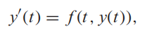 形如，一阶常微分方程
6.1 INITIAL VALUE PROBLEMS¶
一阶常微分方程的initial value problem初值问题是该方程与特定区间a≤t≤b上的初始条件： 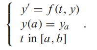
6.1.1 Euler’s Method¶

6.1.3 First-order linear equations¶
一类易于求解的特殊常微分方程提供了一套方便的说明性例子。
它们是一阶方程，其y变量的右侧是线性的。考虑初值问题
 结论
结论

带公式 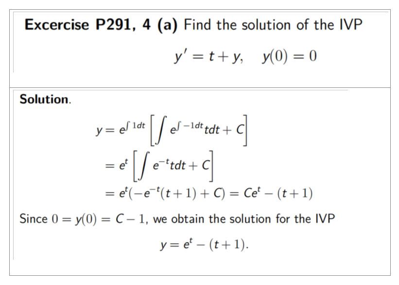
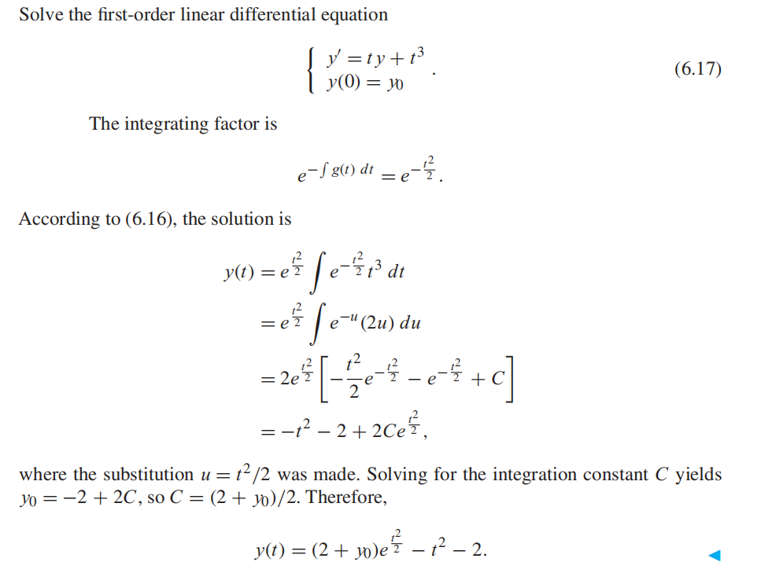
Separation of variables 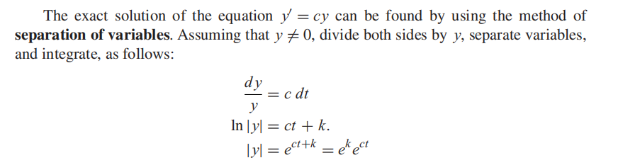
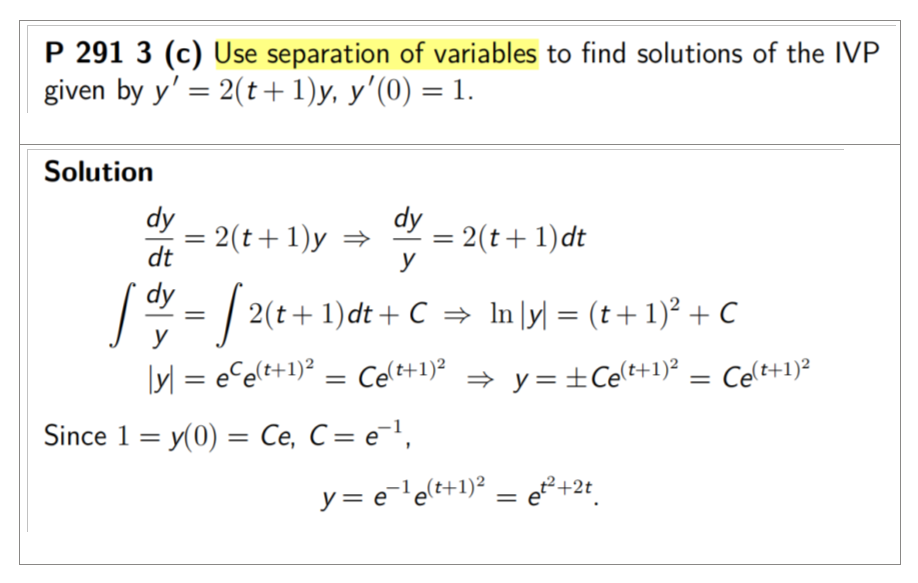
6.2 ANALYSIS OF IVP SOLVERS¶
6.2.1 Local and global truncation error¶

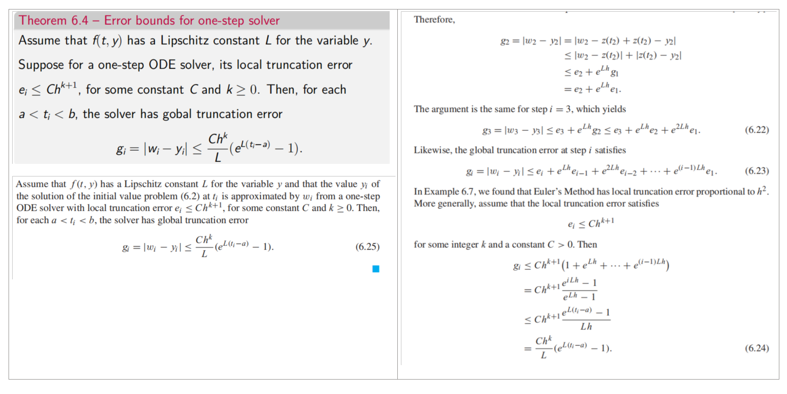
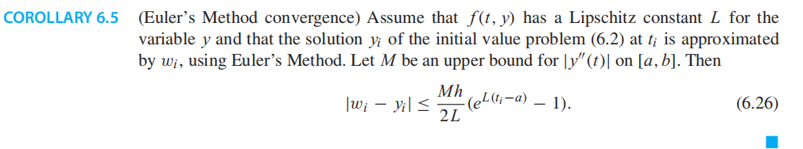

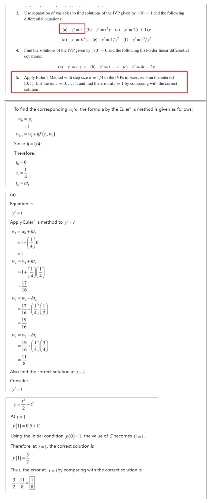
6.6 Implicit Methods and Stiff Equations¶


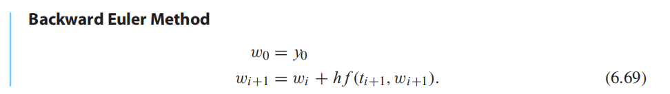
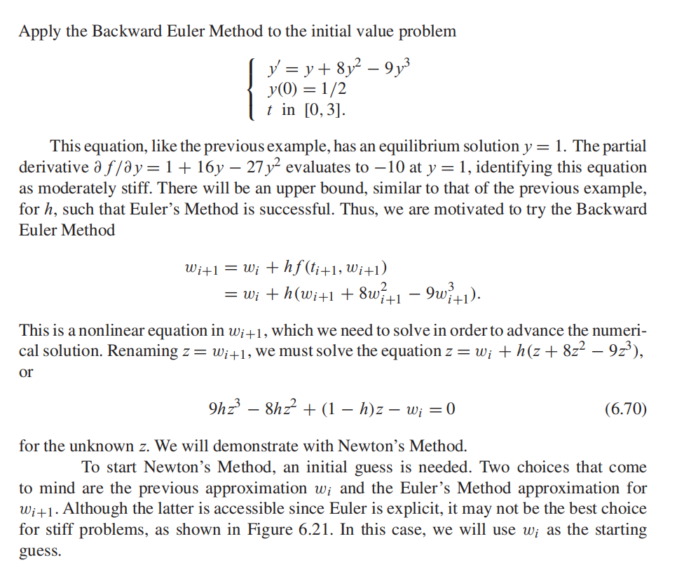